Für alle Kinder, in denen eine tapfere kleine Schutztruppe wohnt — und für alle, die keine Angst mehr vorm Doktor haben müssen.
Mit Calli, Mira, Noah — und Willi, dem Wächter.
Wusstest du, dass in dir eine ganze Polizei wohnt? Nein, keine mit Blaulicht. Eine winzige, tapfere Schutztruppe, die Tag und Nacht auf dich aufpasst: deine Abwehr-Polizei.
Sie sorgt dafür, dass du gesund bleibst. Und du kannst ihr helfen — mit ein paar ganz einfachen Tricks.
In diesem Buch lernst du deine Abwehr-Polizei kennen, ihren mutigen Chef Willi, und du merkst: Der Doktor ist ihr bester Freund. Vor dem muss niemand Angst haben.
Und weil das hier das letzte Abenteuer der Reihe ist, treffen wir am Ende noch ein paar alte Freunde wieder …
Dieser Abschlussband erklärt Kindern das Immunsystem als freundliche „Abwehr-Polizei" und macht alltägliche Hygiene (Händewaschen, Nies-Trick) greifbar — ohne Angst oder Ekel vor Keimen zu schüren.
Er nimmt zudem die Angst vor Arztbesuchen, indem er den Arzt als Helfer und Teamkollegen darstellt. Das Thema Impfen wird sehr behutsam und faktisch als „Steckbrief für die Abwehr-Polizei" eingeführt — konkrete Fragen dazu gehören in Ihre kinderärztliche Praxis. Zum Finale bündelt der Band die Botschaften der ganzen Reihe: Schlaf, Ernährung, Bewegung und Gefühle stärken auch die körpereigene Abwehr.
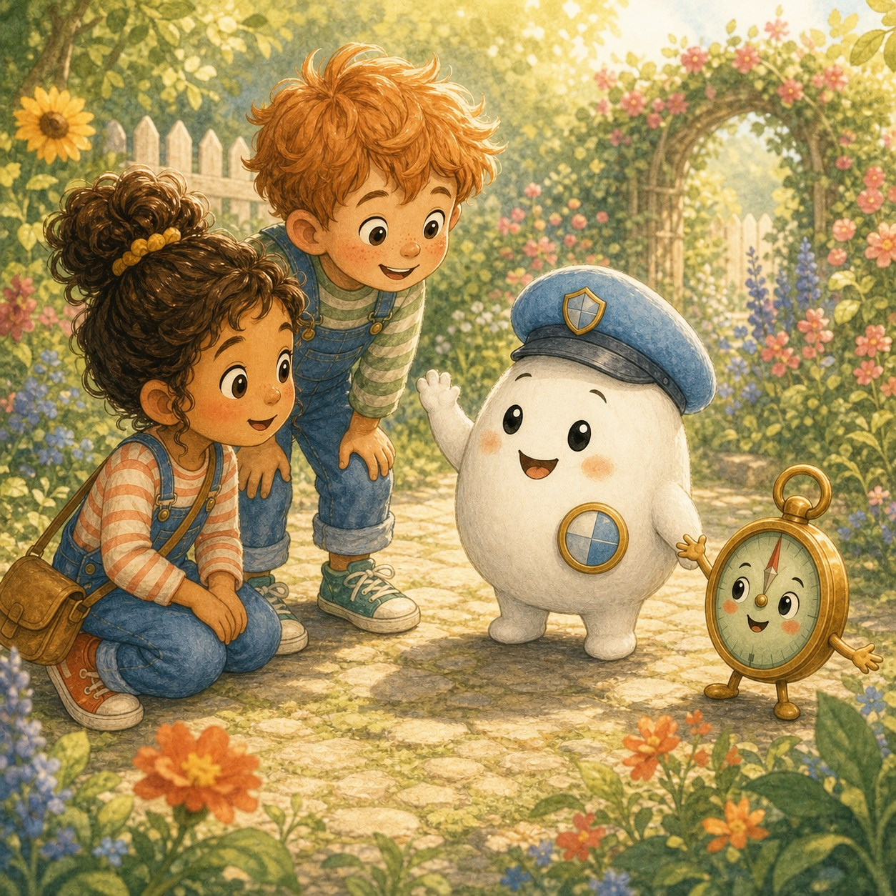
„Autsch", sagte Noah und rieb sich die Nase. „Ich glaube, ich werde ein bisschen kränklich."
„Keine Sorge", sagte Calli. „Da ist schon jemand für dich im Einsatz."
„Wer denn?", fragte Noah und schaute sich um.
„Ich!", rief eine muntere Stimme. Vor ihnen stand ein kleines, rundes, weißes Wesen mit einer hellblauen Mütze und einem winzigen Schild. „Willi, der Wächter. Chef deiner Abwehr-Polizei. Sehr erfreut!"
Willi pfiff, und plötzlich sah man sie: eine ganze Truppe winziger weißer Wächter, die fleißig durch Noahs Körper patrouillierten — wie eine freundliche kleine Polizei auf Streife.
„Wir sind Tag und Nacht für dich da", sagte Willi stolz. „Wir passen auf, dass alles gesund bleibt."
„Sogar wenn ich schlafe?", fragte Noah.
„Gerade dann arbeiten wir besonders gern", zwinkerte Willi.
Callis Schlau-Seite
In deinem Körper wohnt eine eigene Schutztruppe: dein Immunsystem — die Abwehr-Polizei.
Sie arbeitet Tag und Nacht, ganz von allein, ohne dass du etwas tun musst.
Sie schützt dich vor winzigen Dingen, die dich krank machen könnten.
Je besser du für dich sorgst, desto stärker ist deine Abwehr-Polizei.
Callis Satz für dieses Kapitel
In dir steckt eine tapfere Schutztruppe — und du bist ihr wichtigster Chef.
Mitmach-Kompass
Leg einmal die Hand auf deinen Bauch.
Denk daran, dass gerade tausend kleine Wächter für dich arbeiten.
Sag ihnen leise in Gedanken Danke, dass sie auf dich aufpassen.
Überleg, was du heute Gutes für sie tun kannst.
„Danke, liebe Abwehr-Polizei", flüsterte Noah. „Gern geschehen", grinste Willi.
Das Bild einer „Abwehr-Polizei" macht Kindern das Immunsystem zugänglich, ohne Angst vor Krankheit oder Keimen zu erzeugen. Wichtig ist die positive Grundbotschaft: Der Körper schützt sich selbst, und Kinder können ihn dabei unterstützen.
Vermeiden Sie Dramatisierung („überall lauern Bakterien"). Ein gesundes Verhältnis zu Hygiene entsteht aus Selbstwirksamkeit, nicht aus Furcht.
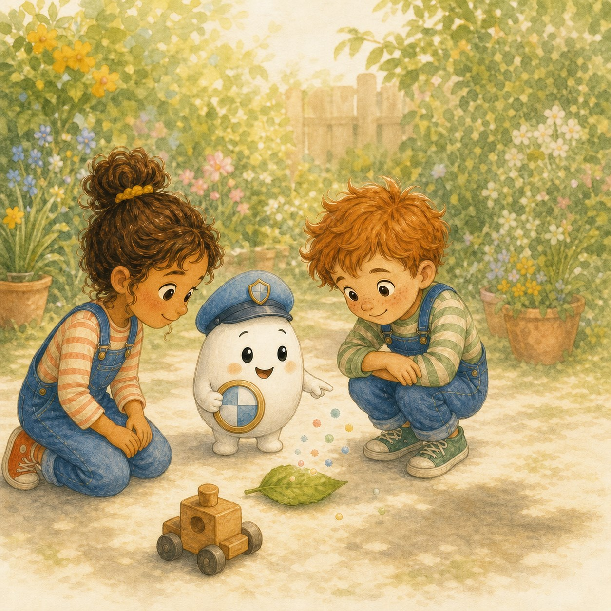
„Und wovor beschützt ihr mich eigentlich?", fragte Noah.
„Vor den Wirbelmachern", sagte Willi. „Das sind so winzige Dinger, dass man sie gar nicht sehen kann. Die meisten sind völlig harmlos — mit denen werden wir spielend fertig."
„Und die anderen?"
„Ein paar können dich ein bisschen kränklich machen", sagte Willi. „Aber keine Sorge: Genau dafür gibt es uns."
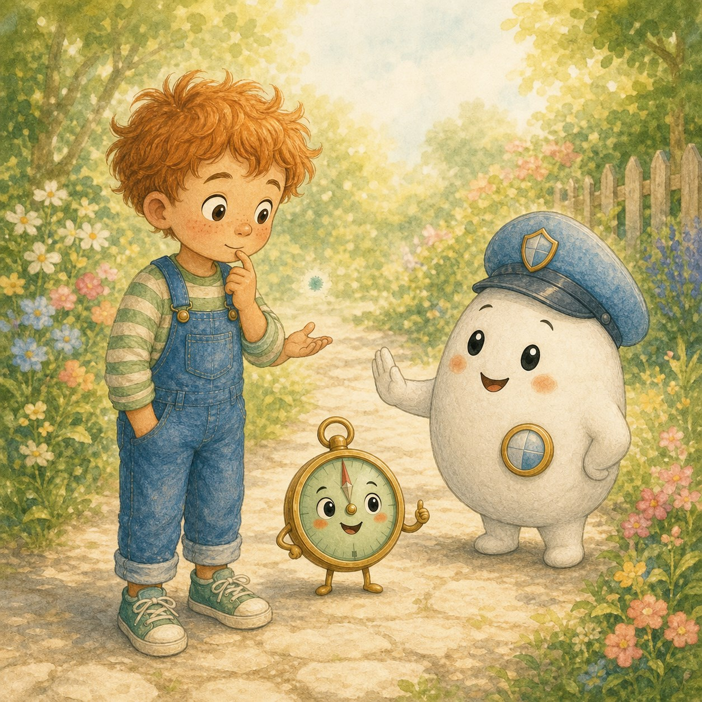
„Wie kommen die denn überhaupt rein?", wollte Mira wissen.
„Meistens über die Hände", sagte Willi. „Du fasst etwas an, und dann — schwupp — ins Gesicht, in Mund oder Nase."
Noah hielt mitten in der Bewegung inne. Er hatte gerade die Hand zum Mund führen wollen.
„Kein Drama", lachte Willi. „Aber jetzt kommt der wichtigste Trick des ganzen Buches …"
Callis Schlau-Seite
Keime sind so winzig, dass man sie mit bloßem Auge nicht sehen kann.
Die allermeisten Keime sind harmlos — dein Körper wird gut mit ihnen fertig.
Manche können dich kränklich machen. Sie reisen oft über die Hände.
Deshalb hilft es, die Hände sauber zu halten — nicht aus Angst, sondern als kleine Hilfe für deine Abwehr-Polizei.
Callis Satz für dieses Kapitel
Die meisten Wirbelmacher sind harmlos — und für den Rest hast du deine Abwehr-Polizei.
Mitmach-Kompass
Schau dir einmal deine Hände genau an.
Womit hast du heute schon alles etwas angefasst?
Türklinken, Spielsachen, ein Tier, dein Pausenbrot?
Merk dir: Vor dem Essen und nach dem Klo sind Hände-Wasch-Zeiten.
„Meine Hände waren heute überall", staunte Mira. „Gute Detektivarbeit", sagte Willi.
Kinder müssen keine Angst vor Keimen haben — Ziel ist ein entspanntes, gewohnheitsmäßiges Hygieneverhalten. Feste Anlässe (vor dem Essen, nach der Toilette, nach dem Nachhausekommen) sind leichter zu merken als abstrakte Regeln.
Vorbild wirkt am stärksten: Waschen Sie gemeinsam die Hände, statt es nur einzufordern.
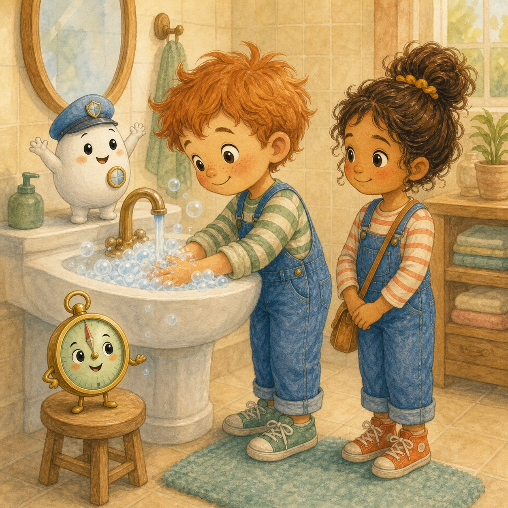
Noah drehte den Wasserhahn auf, nahm Seife und rubbelte gründlich: Handflächen, Handrücken, zwischen den Fingern, sogar die Daumen. Es schäumte herrlich.
„So lange, bis du zweimal Happy Birthday summen könntest", sagte Willi begeistert.
Als Noah fertig war, jubelte die ganze Abwehr-Polizei. „Ein echter Hände-Held!"
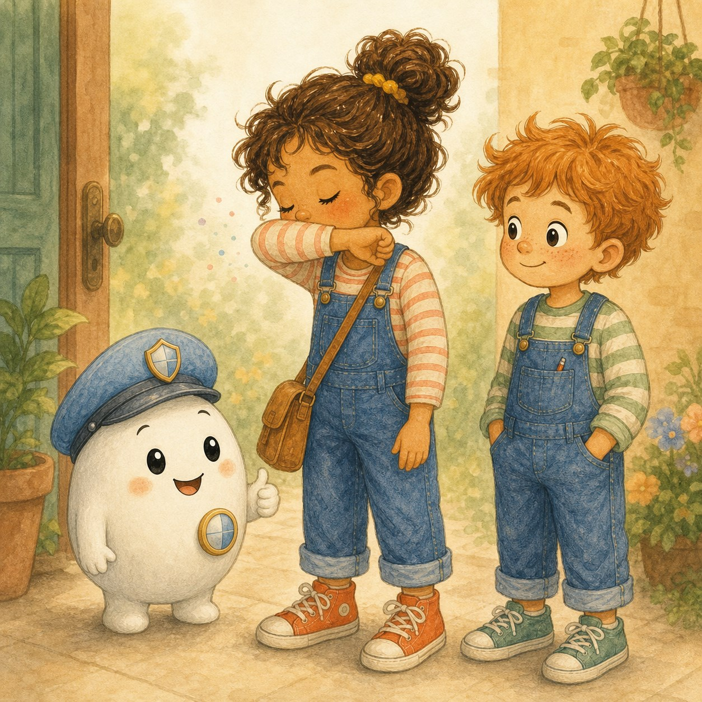
„Und was mache ich, wenn ich niesen muss?", fragte Mira — und schon kribbelte es in ihrer Nase.
„In die Armbeuge!", rief Willi. „Nicht in die Hand — sonst wandern die Wirbelmacher gleich weiter."
„Hatschi!", machte Mira und nieste brav in ihren Ellenbogen.
„Perfekt", sagte Willi. „Genauso beim Husten. Das ist der Nies-Trick."
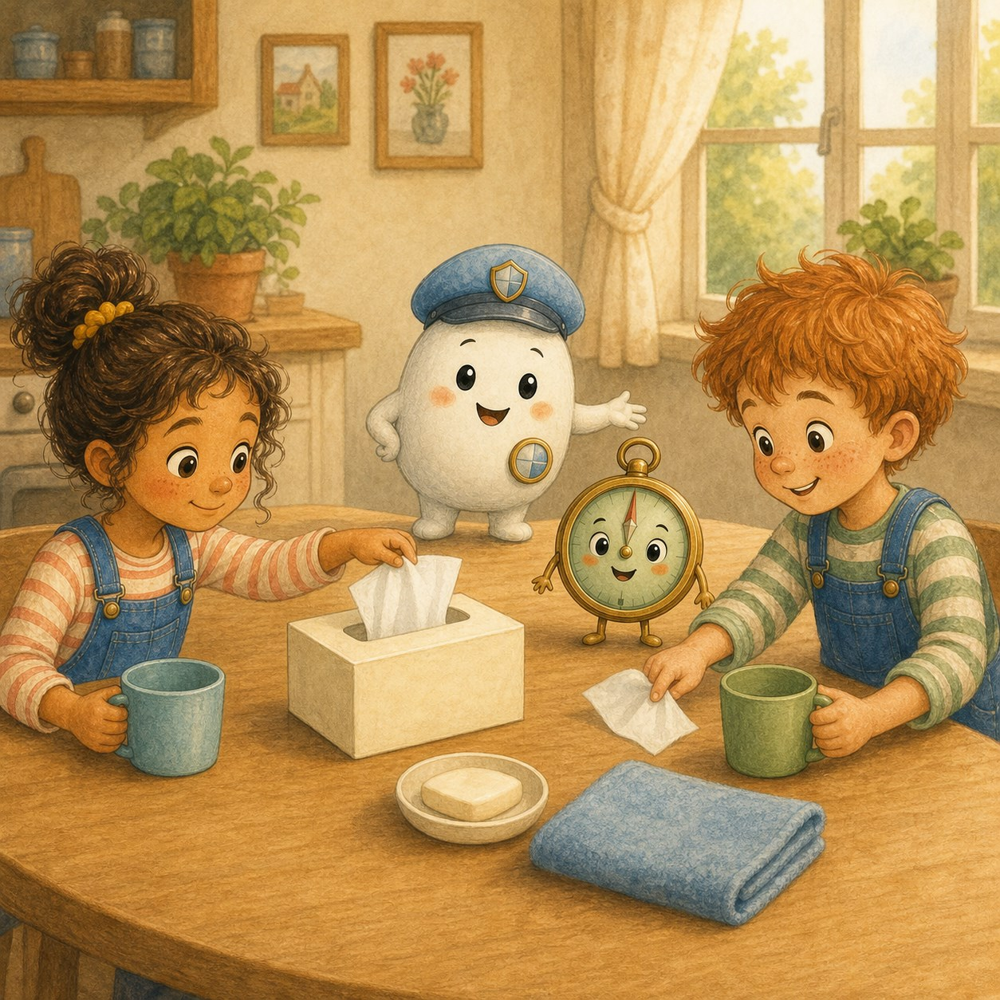
„Es gibt noch mehr Tricks", sagte Willi und zählte auf: ein eigenes Taschentuch, nicht aus dem Glas der anderen trinken, und die Hände möglichst aus dem Gesicht lassen.
„Das ist ja wie ein Geheimtraining", staunte Noah.
„Genau", sagte Willi. „Jeder kleine Trick macht meine Truppe ein bisschen stärker. Und das Beste: Es tut überhaupt nicht weh."
Callis Schlau-Seite
Hände waschen mit Seife ist der wichtigste Trick — gründlich und lange genug.
Beim Niesen und Husten hilft der Nies-Trick: in die Armbeuge, nicht in die Hand.
Ein eigenes Taschentuch und ein eigenes Trinkglas helfen zusätzlich.
Das alles ist keine Angst-Regel, sondern ein kleines Training für deine Abwehr-Polizei.
Callis Satz für dieses Kapitel
Wasch deine Hände wie ein Held — deine Abwehr-Polizei jubelt jedes Mal.
Mitmach-Kompass
Dreh das Wasser auf und nimm Seife.
Wasch Handflächen, Handrücken, zwischen den Fingern und die Daumen.
Summ dabei zweimal dein Lieblingslied — so lange dauert gutes Waschen.
Gut abtrocknen nicht vergessen.
„Ich sing beim Waschen immer laut", sagte Noah. „Dann tanzt meine Truppe mit", lachte Willi.
Gründliches Händewaschen (mit Seife, etwa 20–30 Sekunden) ist eine der wirksamsten Alltagsmaßnahmen. Ein Lied als Zeitmaß macht es kindgerecht.
Betonen Sie das Positive („So hilfst du deiner Abwehr-Polizei") statt Verbote. Übertriebene Desinfektion ist im Alltag nicht nötig; normale Sauberkeit genügt.
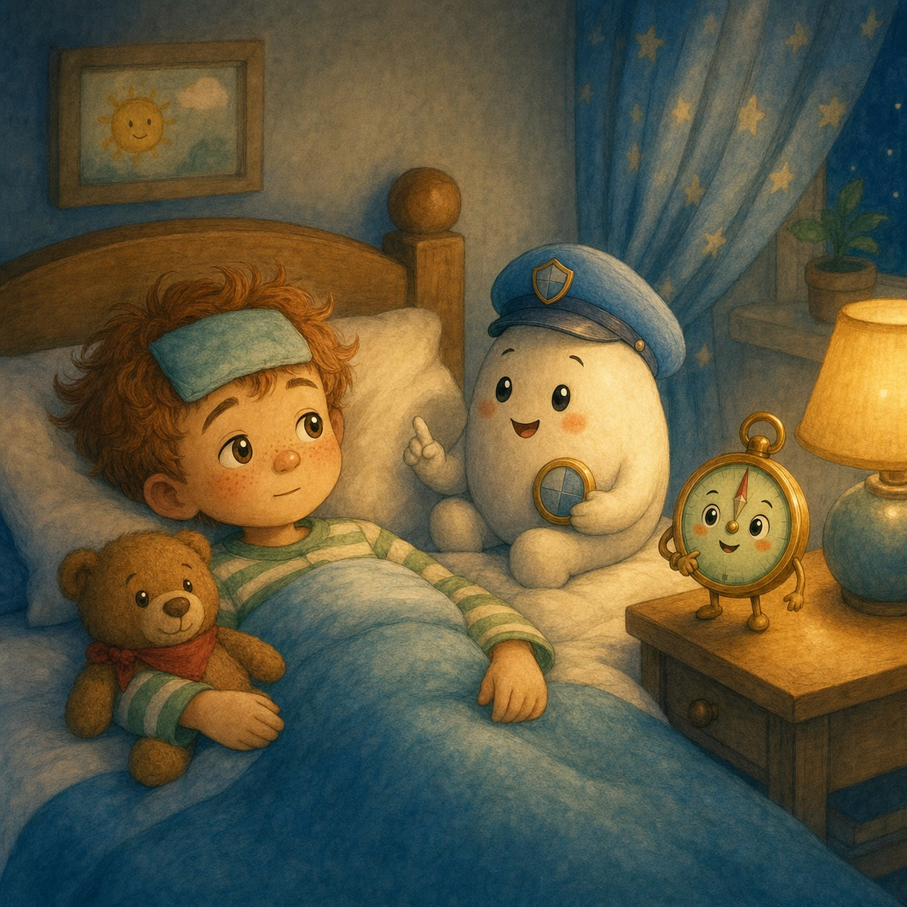
Ein paar Tage später fühlte sich Noah doch schlapp. Seine Stirn war warm, und er war müde.
„Bin ich jetzt kaputt?", fragte er leise.
„Überhaupt nicht", sagte Willi vom Kopfkissen aus. „Im Gegenteil: Meine Truppe arbeitet gerade auf Hochtouren. Das Warme, das du spürst, ist unsere Arbeitshitze — wir nennen es Fieber."
„Ihr kämpft gerade für mich?", murmelte Noah. „Und wie", sagte Willi. „Deshalb bist du so müde. Wir brauchen deine Kraft."
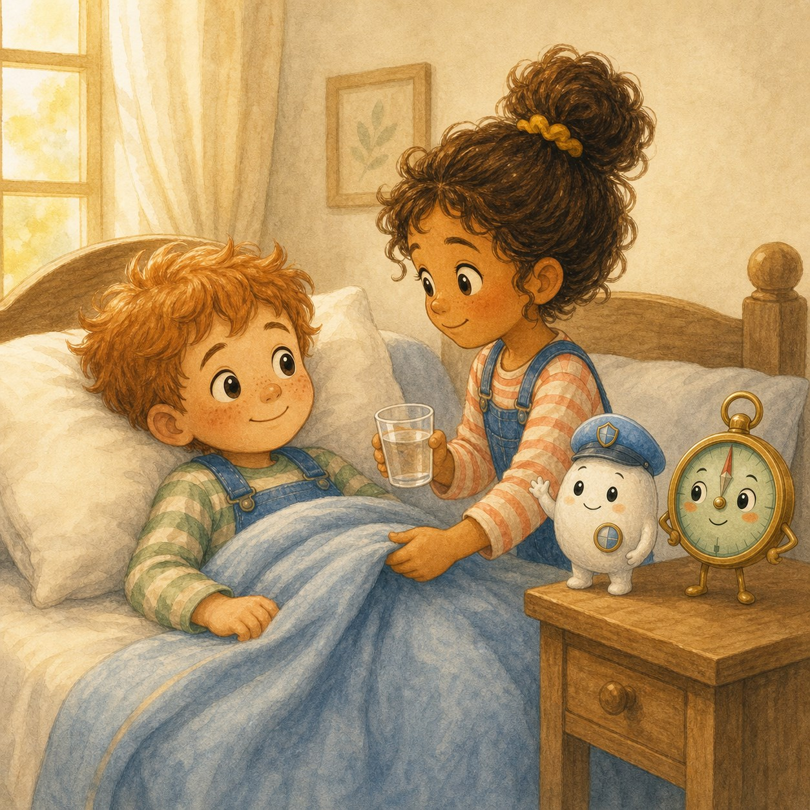
Mira brachte ein Glas Wasser und deckte Noah zu. „Was hilft der Abwehr-Polizei jetzt am meisten?", fragte sie Willi.
„Ruhe, Schlaf und genug Trinken", sagte Willi. „Dann haben wir Kraft für unsere Arbeit." Calli nickte: „Weißt du noch, Band 4? Im Schlaf öffnet die Werkstatt. Und jetzt hilft sie deiner Polizei."
Noah trank einen großen Schluck und kuschelte sich ein. „Dann ruhe ich mich eben für euch aus."
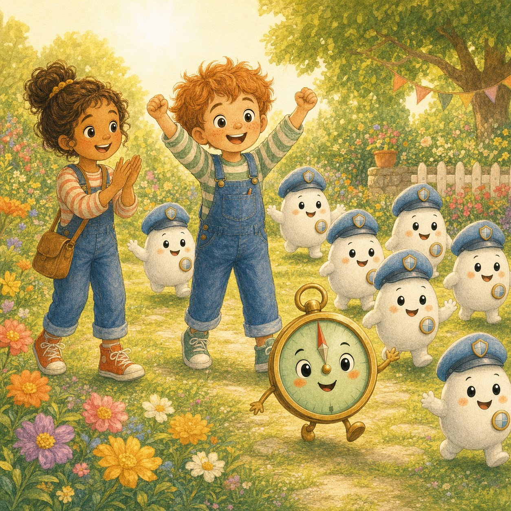
Nach ein paar Tagen Ruhe war Noah wieder fit. Das Fieber war weg, die Wirbelmacher besiegt.
„Geschafft!", jubelte die Abwehr-Polizei und feierte eine kleine Parade.
„Und das Beste kommt noch", sagte Willi geheimnisvoll. „Wir merken uns diesen Wirbelmacher jetzt ganz genau. Kommt er noch mal, sind wir blitzschnell."
Noah sprang aus dem Bett. „Meine Polizei ist die beste!"
Callis Schlau-Seite
Kranksein bedeutet oft: Deine Abwehr-Polizei arbeitet gerade besonders hart.
Fieber ist Arbeitshitze — ein Zeichen, dass dein Körper kämpft.
Müdigkeit ist normal: Dein Körper braucht die Kraft für die Abwehr.
Ruhe, Schlaf und genug Trinken helfen deiner Polizei am meisten.
Callis Satz für dieses Kapitel
Wenn du krank bist, ist Ausruhen kein Nichtstun — es ist Mithelfen.
Mitmach-Kompass
Wenn du krank bist, mach es dir gemütlich.
Trink über den Tag verteilt immer wieder etwas.
Ruh dich aus und schlaf viel — deine Polizei dankt es dir.
Sag einem Großen Bescheid, wie du dich fühlst.
„Ich mach mir ein Kissen-Nest", sagte Noah. „Das beste Hauptquartier", fand Willi.
Kinder verstehen Kranksein leichter, wenn Symptome einen Sinn ergeben (die „Abwehr arbeitet"). Das reduziert Angst. Ruhe, Flüssigkeit und Zuwendung sind die wichtigsten Bausteine.
Dieses Buch ersetzt keine ärztliche Einschätzung: Bei hohem oder anhaltendem Fieber, starker Beeinträchtigung, Atemproblemen oder Sorge holen Sie bitte ärztlichen Rat.
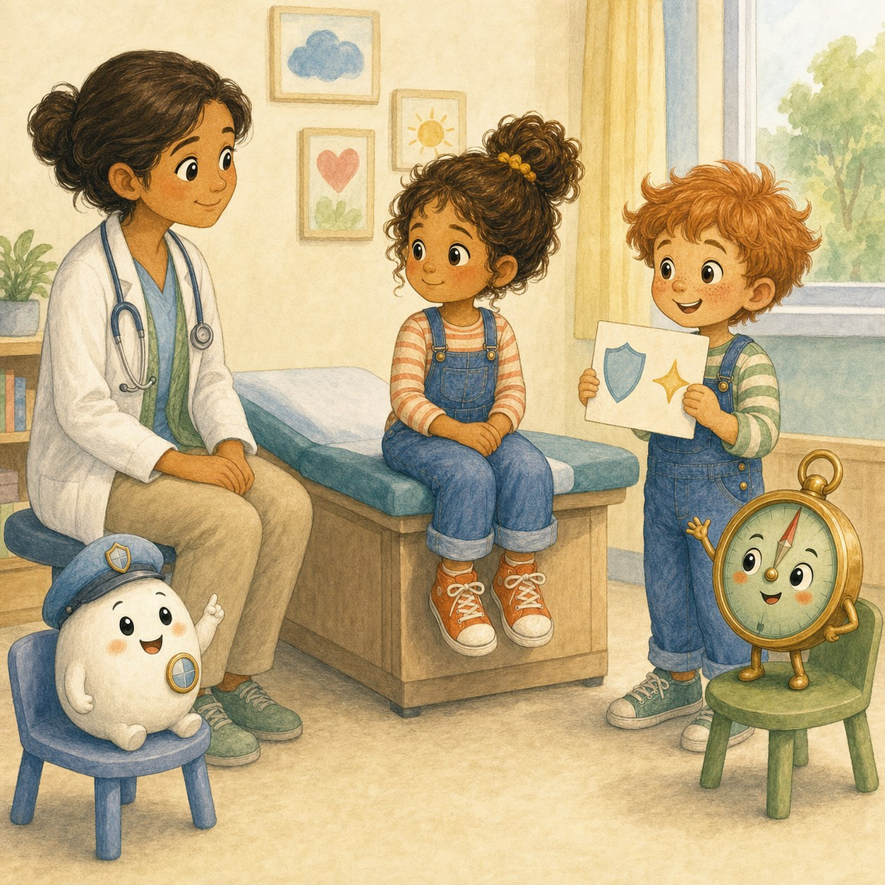
Beim Kinderarzt erklärte Willi etwas Cleveres. „Manchmal bekommt meine Truppe eine kleine Trainingskarte — einen Steckbrief. Darauf steht, wie ein ganz bestimmter Wirbelmacher aussieht."
„Wozu das?", fragte Mira.
„Damit wir ihn sofort erkennen, falls er auftaucht — und blitzschnell sind", sagte Willi. „Der kurze Pieks dazu ist schnell vorbei. Und deine Ärztin erklärt dir alles ganz genau."
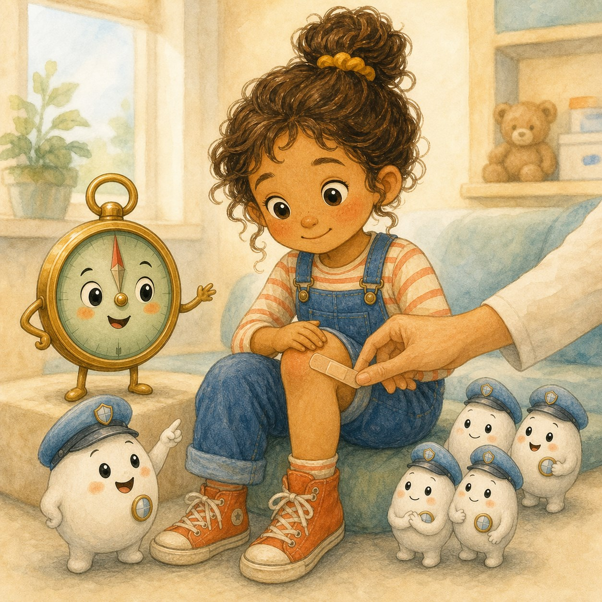
Draußen schürfte sich Mira das Knie. „Autsch!" Ein kleiner Kratzer, ein bisschen Blut.
„Kein Problem", sagte Willi. „Erst sauber machen, dann ein Pflaster drauf — das ist ein kleines Schutzdach. Darunter arbeitet mein Reparatur-Trupp in Ruhe."
„Und dann?", fragte Mira.
„Dann heilt es", sagte Willi. „Dein Körper repariert sich ganz von selbst. Ist das nicht großartig?"
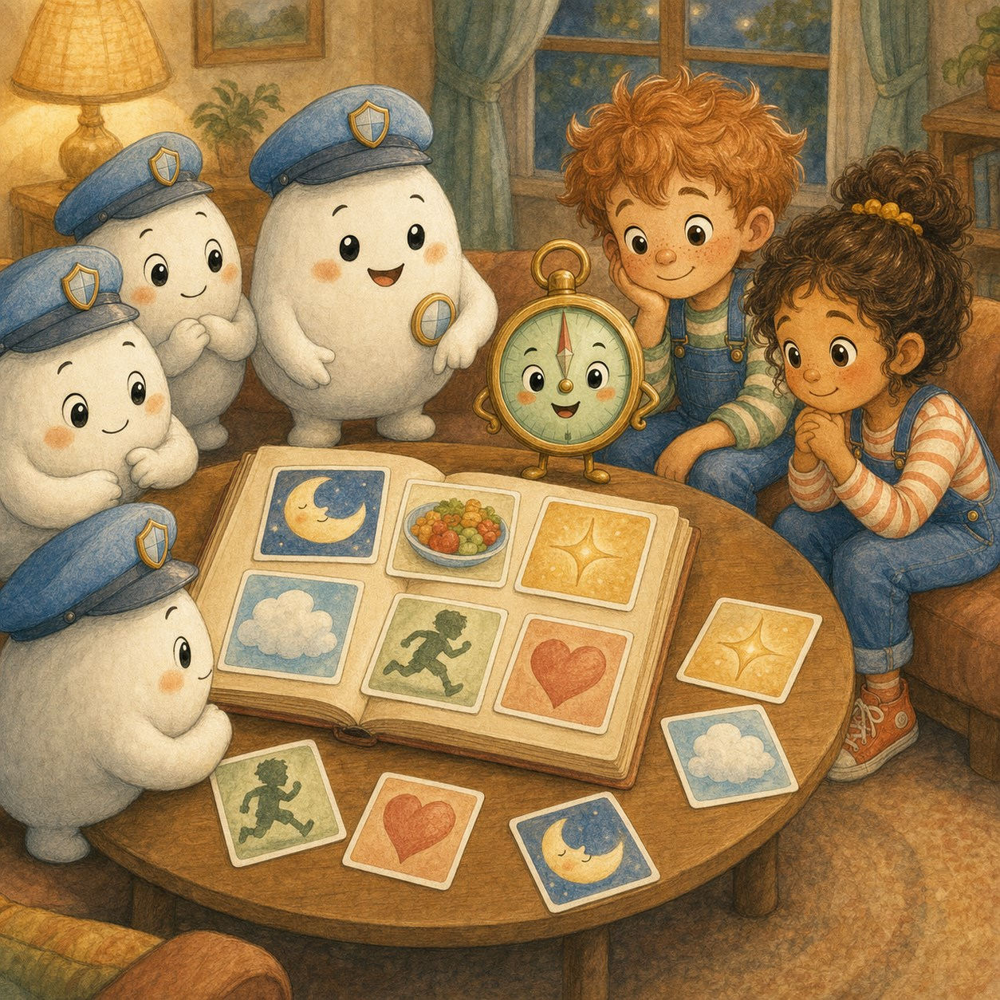
„Das Allerbeste an meiner Truppe", sagte Willi, „ist ihr Gedächtnis. Einen Wirbelmacher, den wir einmal besiegt haben, vergessen wir nie wieder."
„Wie ein Fotoalbum von Bösewichten?", grinste Noah.
„Ganz genau", lachte Willi. „Kommt so einer wieder, sind wir schon da, bevor er überhaupt Ärger machen kann. Deshalb wirst du gegen manche Sachen nur einmal krank."
Callis Schlau-Seite
Deine Abwehr-Polizei kann lernen, bestimmte Wirbelmacher schnell zu erkennen.
Eine Impfung ist wie ein Steckbrief oder eine Trainingskarte für die Polizei — dein Kinderarzt erklärt dir alles dazu.
Bei einer kleinen Wunde hilft: sauber machen und ein Pflaster als Schutzdach.
Dein Körper repariert kleine Wunden ganz von selbst.
Callis Satz für dieses Kapitel
Deine Abwehr-Polizei lernt dazu — und vergisst einen besiegten Wirbelmacher nie wieder.
Mitmach-Kompass
Bei einer kleinen Schürfwunde: erst einem Großen Bescheid sagen.
Die Wunde vorsichtig sauber machen lassen.
Ein Pflaster als Schutzdach aufkleben.
Nicht daran herumpulen — darunter arbeitet der Reparatur-Trupp.
„Ich hab mein Pflaster selbst ausgesucht", sagte Mira. „Mit Sternen sogar", freute sich Willi.
Das Thema Impfen wird hier bewusst niedrigschwellig und faktisch als „Gedächtnistraining" des Immunsystems eingeführt. Individuelle Fragen, Aufklärung und Entscheidungen gehören in die kinderärztliche Praxis — dieses Buch ersetzt keine ärztliche Beratung.
Für kleine Alltagsverletzungen gilt: Ruhe bewahren, reinigen, abdecken. Ihre eigene Gelassenheit hilft dem Kind am meisten.
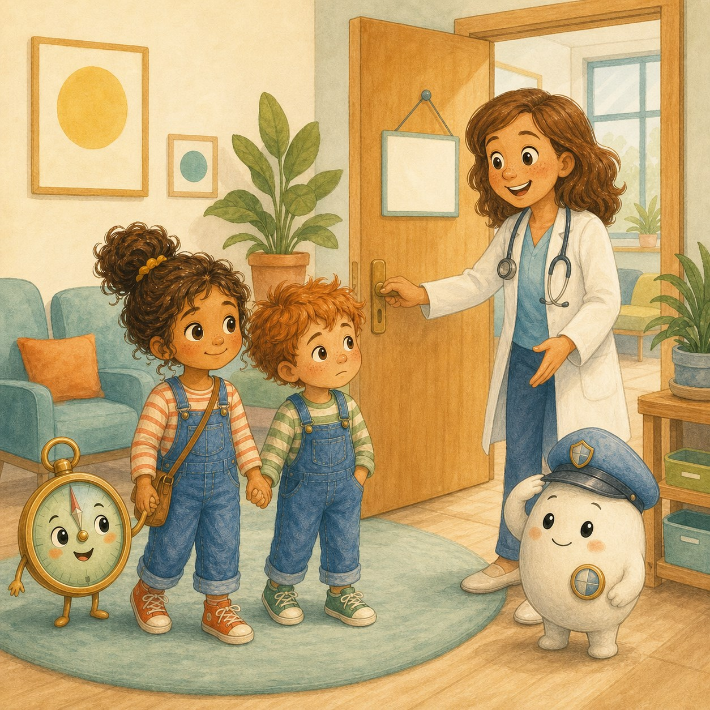
Vor der nächsten Untersuchung war Noah ein bisschen mulmig. „Muss ich zum Doktor? Ich bin aufgeregt."
„Aufgeregt sein ist völlig okay", sagte Willi sanft. „Aber weißt du was? Der Doktor ist mein bester Freund. Er ist ein Teamkollege deiner Abwehr-Polizei."
Als sie ankamen, salutierte Willi fröhlich vor der Ärztin. „Sie hilft mir, wenn ich mal Verstärkung brauche."
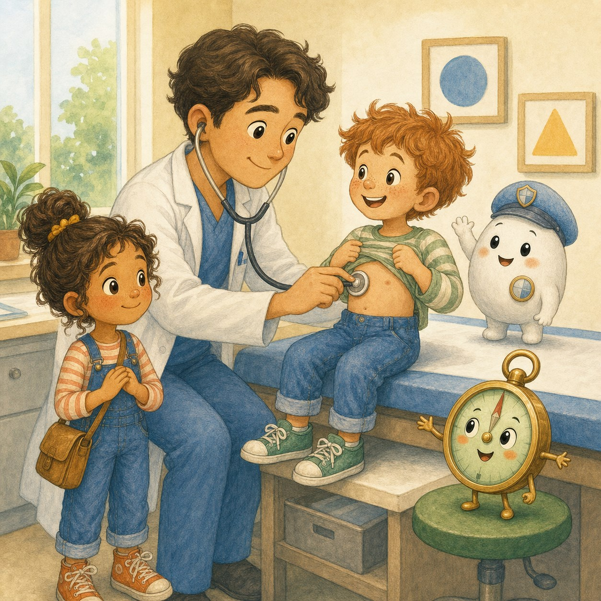
Die Ärztin zeigte Noah alles in Ruhe. Sie horchte mit dem kühlen Stethoskop seinen Herzschlag ab, schaute mit einem Lämpchen in Hals und Ohren und drückte vorsichtig auf seinen Bauch.
„Das kitzelt ja", kicherte Noah. Die Aufregung war fast weg.
„Siehst du?", sagte Willi. „Nichts davon tut weh. Der Doktor schaut nur nach, ob bei uns alles rund läuft."
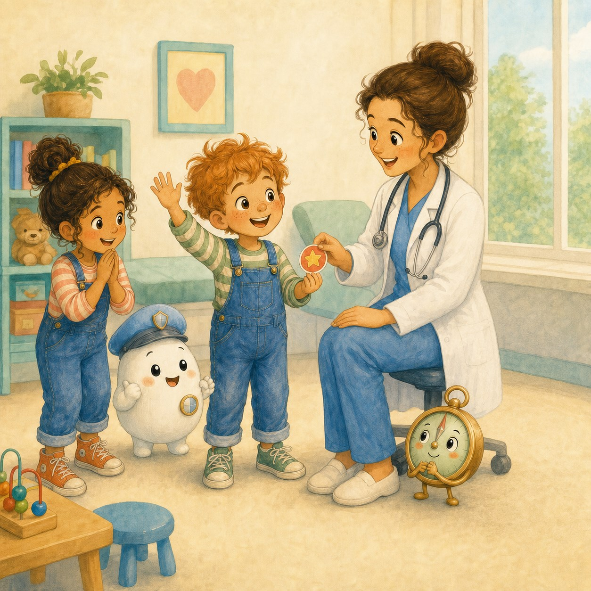
„Darf ich auch was fragen?", traute sich Noah.
„Immer", sagte die Ärztin und beantwortete geduldig jede Frage.
Am Ende bekam Noah einen bunten Aufkleber für seinen Mut. „Aufgeregt sein und trotzdem hingehen — das ist echte Tapferkeit", sagte Calli. „Weißt du noch, aus Band 5? Mut heißt: trotzdem."
Noah strahlte. „Der Doktor ist gar nicht gruselig. Der ist nett."
Callis Schlau-Seite
Der Doktor ist ein Helfer und ein Teamkollege deiner Abwehr-Polizei.
Beim Doktor wird geschaut, ob alles gut läuft — das meiste kitzelt höchstens.
Aufgeregt sein ist völlig okay. Du darfst alles fragen.
Du bist beim Doktor nie allein — ein Vertrauensmensch ist dabei.
Callis Satz für dieses Kapitel
Vor dem Doktor muss niemand Angst haben — er ist auf der Seite deiner Abwehr-Polizei.
Mitmach-Kompass
Überleg vor dem nächsten Arztbesuch, was du wissen möchtest.
Denk dir zwei oder drei Fragen aus.
Nimm dein Lieblings-Kuscheltier als Begleiter mit.
Nach dem Termin darfst du stolz auf dich sein.
„Ich frage, wie laut mein Herz klopft", sagte Noah. „Gute Frage", sagte Willi.
Angst vor Arztbesuchen ist häufig. Hilfreich sind ehrliche, altersgerechte Ankündigung, kein Drohen mit dem Arzt („wenn du nicht brav bist …") und die Erlaubnis, aufgeregt zu sein.
Lassen Sie Ihr Kind Fragen stellen, nehmen Sie einen Trostgegenstand mit und loben Sie den Mut — nicht das „Stillhalten". Das prägt eine lebenslang gesunde Haltung zu medizinischer Hilfe.
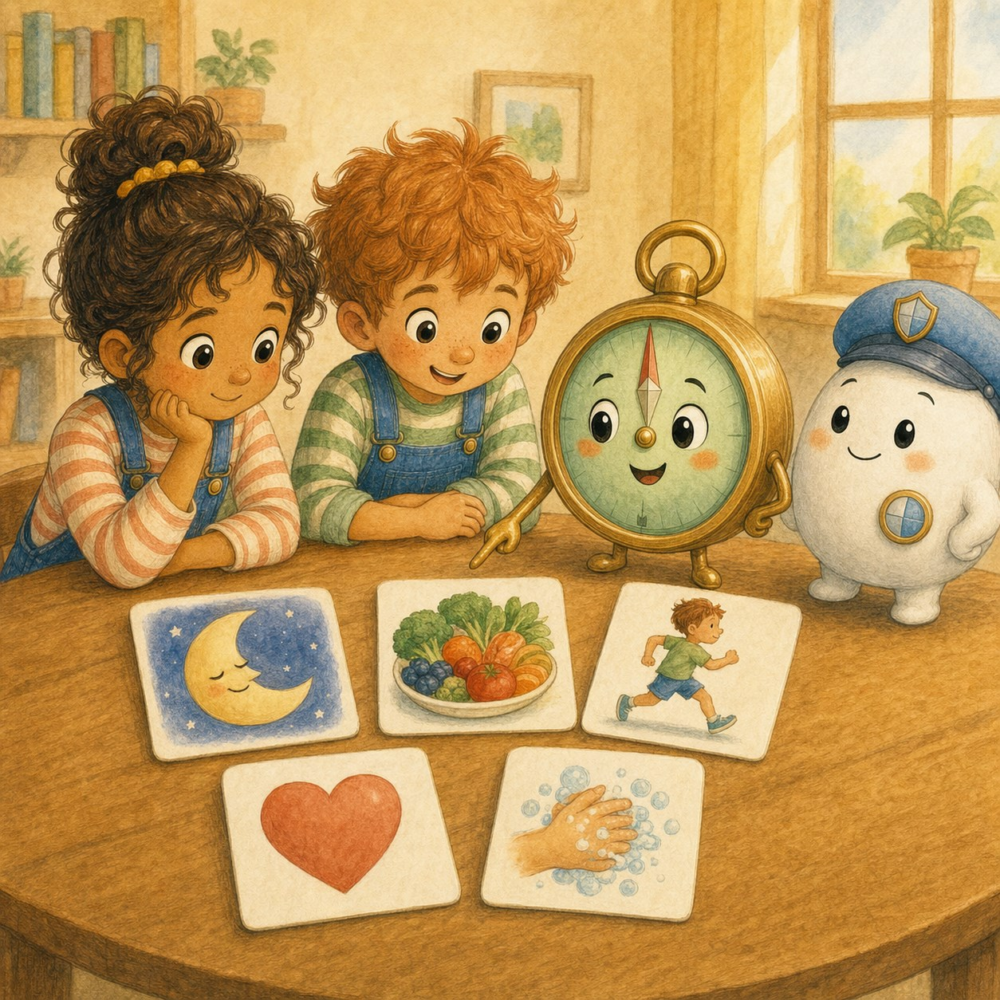
„Willi", fragte Mira, „was macht deine Abwehr-Polizei denn am allerstärksten?"
Willi lächelte und Calli legte ein paar Karten auf den Tisch. „Das", sagte Calli, „ist das Geheimnis der ganzen Reihe."
Auf den Karten war alles zu sehen, was Mira und Noah schon gelernt hatten: gut schlafen, bunt essen und trinken, sich bewegen, auf Gefühle hören — und Hände waschen.
„Wer gut für sich sorgt", sagte Willi, „hat die stärkste Abwehr-Polizei der Welt."
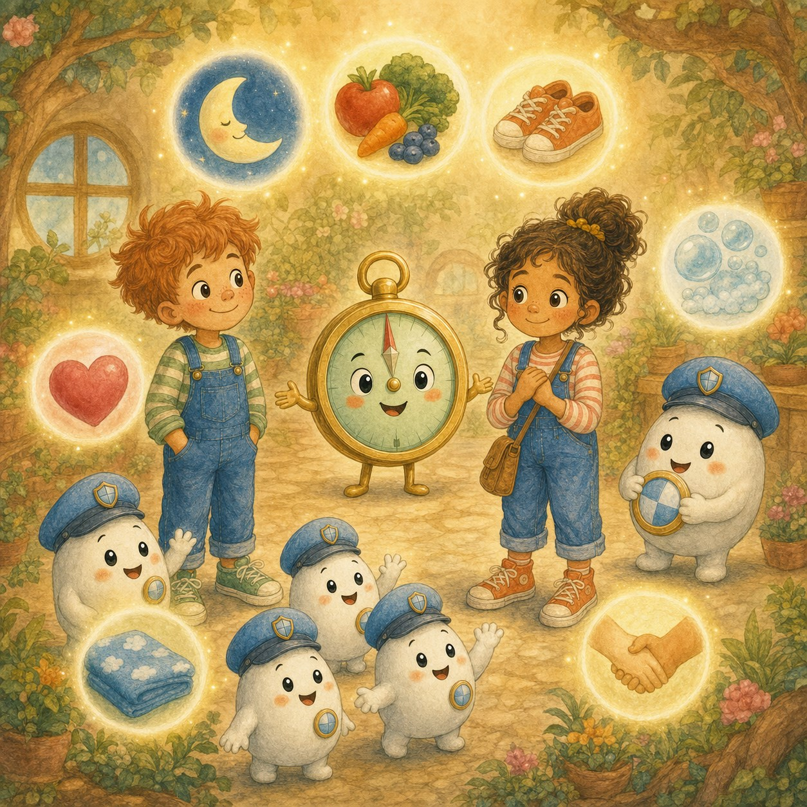
„Also hilft mein Schlaf aus Band 4 auch dir?", fragte Noah.
„Und dein buntes Essen, deine Bewegung und sogar deine Gefühle", sagte Willi. „Wenn es dir rundum gut geht, haben wir die meiste Kraft."
„Der ganze Körper ist ein Team", sagte Calli. „Jeder Teil hilft dem anderen — genau wie wir alle in diesen Büchern."
Noah nickte stolz. „Dann bin ich ja der Chef vom besten Team überhaupt."
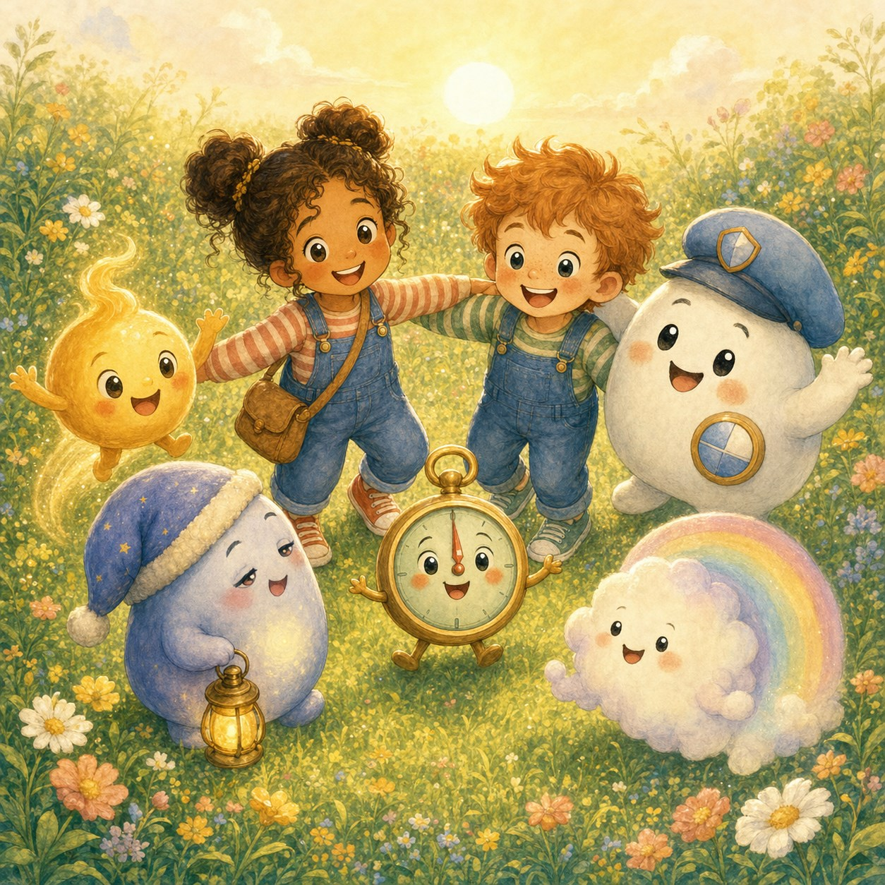
Und dann geschah etwas Wunderbares. Ein goldener Funke sauste heran — Flitz aus dem Bewegungs-Band! Aus einem gemütlichen Schatten tauchte Nino mit seiner Laterne auf. Und über allen schwebte Wolki in strahlenden Regenbogenfarben.
„Ihr seid alle da!", jubelte Mira.
„Natürlich", sagte Calli gerührt. „Wir gehören zusammen. Bewegung, Schlaf, Gefühle, deine Abwehr — und ein Kompass, der euch begleitet."
Alle bildeten einen großen, fröhlichen Kreis. Es war das schönste Wiedersehen der ganzen Reihe.
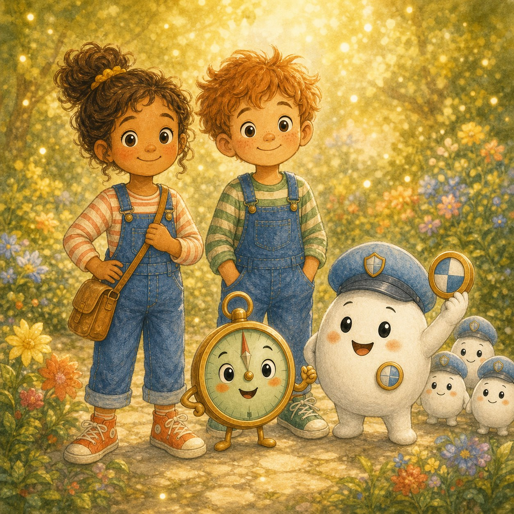
„Ihr habt jetzt wirklich alles gelernt", sagte Calli feierlich. „Auf euren Körper hören. Gut essen und trinken. Euch bewegen. Gut schlafen. Eure Gefühle ernst nehmen. Und eure Abwehr-Polizei stark halten."
„Damit seid ihr offiziell", sagte Willi und hob sein Schild. „Abwehr-Helden — und Gesundheits-Kompass-Helden dazu!"
Mira und Noah strahlten um die Wette. Und ganz tief in ihnen jubelte eine winzige, tapfere Polizei.
1. Was ist die Abwehr-Polizei? (a) echte Polizisten (b) dein Immunsystem, deine Schutztruppe (c) ein Spielzeug
2. Sind alle Keime gefährlich? (a) ja, alle (b) nein, die meisten sind harmlos (c) nur die grünen
3. Wohin niest du? (a) in die Hand (b) in die Armbeuge (c) auf den Tisch
4. Was bedeutet Fieber oft? (a) der Körper ist kaputt (b) die Abwehr-Polizei arbeitet gerade hart (c) gar nichts
5. Wie ist der Doktor? (a) gruselig (b) ein Helfer und Teamkollege deiner Abwehr (c) immer böse
6. Was macht deine Abwehr-Polizei stark? (a) nichts (b) schlafen, essen, bewegen, Gefühle, Hände waschen (c) nur Fernsehen
Auflösung: 1b · 2b · 3b · 4b · 5b · 6b — Abwehr-Held / Abwehr-Heldin!
callidus KIDS · Callis Gesundheits-Kompass
für einen echten Abwehr-Helden / eine echte Abwehr-Heldin
(Dein Name)
hat mit Calli und Willi gelernt:
Der Körper hat eine tapfere Schutztruppe, Händewaschen und der Nies-Trick helfen ihr, Kranksein ist Abwehr-Arbeit, der Doktor ist ein Freund —
und wer gut für sich sorgt, hat die stärkste Abwehr-Polizei der Welt.
✂ Zum Ausschneiden
Das war das letzte Abenteuer von Callis Gesundheits-Kompass. Sechs Bände lang haben Mira, Noah und Calli entdeckt, wie wunderbar ihr Körper ist.
Sie haben auf ihre Körpersignale gehört, das Zucker-Monster kennengelernt, den Zappelmotor gefeiert, die Schlaf-Werkstatt besucht, ihr Gefühls-Wetter verstanden — und zum Schluss ihre tapfere Abwehr-Polizei getroffen.
Und das Allerschönste ist: Alles gehört zusammen. Danke, dass du dabei warst. Dein Kompass zeigt jetzt in eine gesunde, mutige, fröhliche Richtung — für immer.
Kinder entwickeln gesunde Hygienegewohnheiten am besten aus Selbstwirksamkeit statt aus Furcht. Das Bild der „Abwehr-Polizei" vermittelt: Der Körper schützt sich selbst, und einfache Gewohnheiten unterstützen ihn.
Wichtig ist Ausgewogenheit — normale Sauberkeit statt Keimangst. Und: Immunkompetenz entsteht auch durch Schlaf, Ernährung, Bewegung und emotionales Wohlbefinden. Der Band verknüpft daher bewusst die Themen der ganzen Reihe.
Kündigen Sie Arztbesuche ehrlich und altersgerecht an, drohen Sie nie mit dem Arzt, und erlauben Sie Ihrem Kind, aufgeregt zu sein. Ein Trostgegenstand, eigene Fragen und Lob für den Mut (nicht fürs „Stillhalten") helfen.
Fragen zu Impfungen und zur individuellen Gesundheit Ihres Kindes gehören in Ihre kinderärztliche Praxis. Dieses Buch informiert allgemein und ersetzt keine ärztliche Beratung.
Woher wissen Erwachsene das? Fachleute erforschen, wie das Immunsystem Kinder schützt, warum Händewaschen und der Nies-Trick helfen, warum Fieber und Ruhe zum Gesundwerden gehören und wie das Immungedächtnis funktioniert. Dieses Wissen ist hier in Bilder und Geschichten übersetzt.
Vor der Veröffentlichung fachlich gegenlesen lassen. Startpunkte: kinderärztliche und öffentliche Gesundheitsempfehlungen zu Händehygiene und Hustenetikette, allgemein verständliche Darstellungen des Immunsystems und des Immungedächtnisses, offizielle Informationen zu Impfungen (z. B. STIKO/RKI, kinderärztliche Fachgesellschaften).
Die Quellen werden in der finalen Ausgabe kompakt angegeben.
callidus macht Gesundheitswissen verständlich — klar, freundlich, alltagstauglich.
Callis Gesundheits-Kompass hat diese Haltung sechs Bände lang für Familien übersetzt: mit weniger Druck, mehr Neugier — und einem Kompass, der weiß, dass Gesundheit aus vielen kleinen, guten Gewohnheiten wächst.
Band 1: Hör auf deinen Körper — Körpersignale.
Band 2: Das Zucker-Monster — Essen, Trinken und Energie.
Band 3: Der Zappelmotor — Bewegung, Pausen und Gute-Laune-Funken.
Band 4: Die Schlaf-Werkstatt — Schlaf, Träume und die innere Uhr.
Band 5: Das Gefühls-Wetter — Gefühle, Mut und Hilfe holen.
Band 6: Die Abwehr-Polizei — Immunsystem, Hygiene und keine Angst vorm Doktor. (dieses Buch)
Callis Gesundheits-Kompass · Band 6: Die Abwehr-Polizei · Reihe: callidus KIDS · 1. Auflage 2026
Text, Konzept & Herausgabe: callidus A&M
Illustrationen: Digitale Aquarell-Illustrationen, KI-gestützt erstellt und redaktionell überarbeitet, auf Basis fester Character-Sheets.
Verantwortlich i. S. d. Presserechts: callidus A&M · Arnold Jedich (Geschäftsführer) · Gerstenstraße 12 · 86356 Neusäß · Deutschland · Kontakt: Telefon 0179 7007772 · info@callidus-am.de · www.callidus-am.de
© 2026 callidus A&M. Alle Rechte vorbehalten. Kein Teil dieses Werkes darf ohne schriftliche Zustimmung reproduziert, vervielfältigt oder verbreitet werden.
Dieses Buch vermittelt allgemeines Gesundheitswissen für Familien und ersetzt keine ärztliche Beratung, Diagnose oder Behandlung.
Ein Teil der Bildproduktion entsteht mit KI-gestützten Bildwerkzeugen und wird vor Veröffentlichung geprüft, überarbeitet und bei Amazon KDP entsprechend deklariert.
Die Texte vermitteln allgemeines Gesundheitswissen und ersetzen keine ärztliche Beratung, Diagnose oder Behandlung. Fragen zu Impfungen und zur Gesundheit Ihres Kindes richten Sie bitte an Ihre kinderärztliche Praxis.
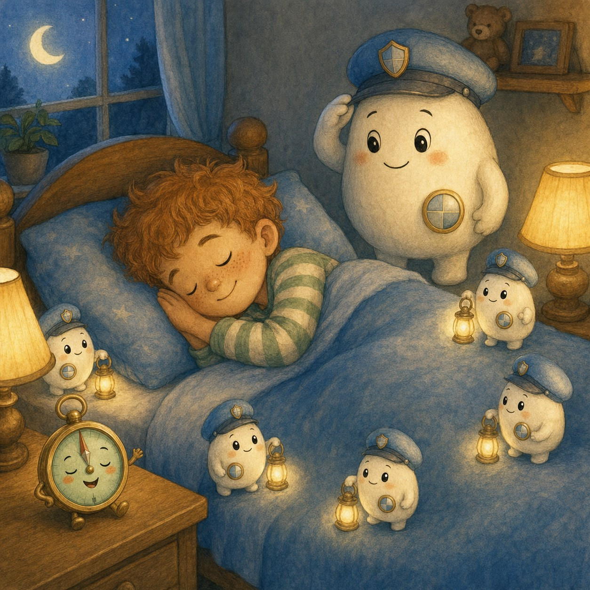
Am Abend wurde es ruhig. Willi setzte seine Mütze zurecht und machte sich bereit für die Nachtschicht.
„Muss ich mir Sorgen machen, wenn ich schlafe?", fragte Noah.
„Niemals", sagte Willi. „Wir sind ja da. Immer. Du kannst ganz ruhig schlafen — deine Abwehr-Polizei ist im Dienst."
Und tief in Noah zog eine winzige, tapfere Truppe zufrieden ihre Runden.
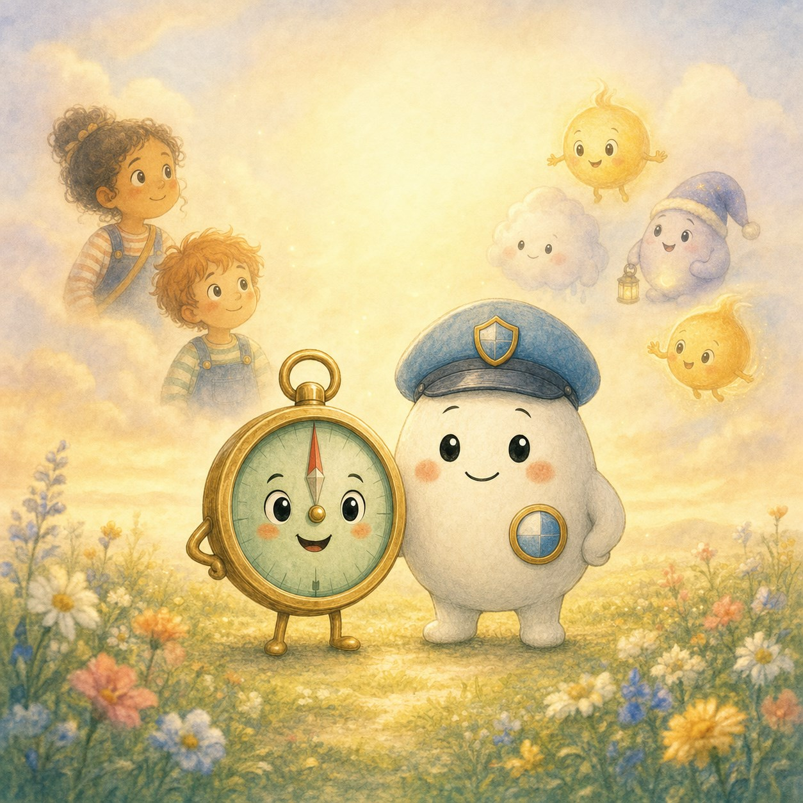
Calli schaute Mira und Noah an — und dann direkt dich, der oder die gerade zuhört.
„Du hast jetzt einen ganzen Kompass für deine Gesundheit", sagte er leise. „Hör auf deinen Körper, sei mutig, sei freundlich zu dir — und deine kleine Polizei passt auf dich auf."
Ganz zum Schluss sagten Calli und Willi zusammen: „Bleib gesund, bleib neugierig — dein Kompass zeigt immer nach vorn."